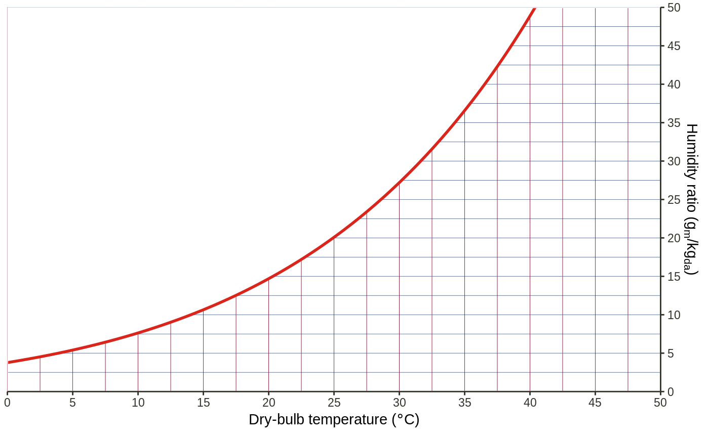
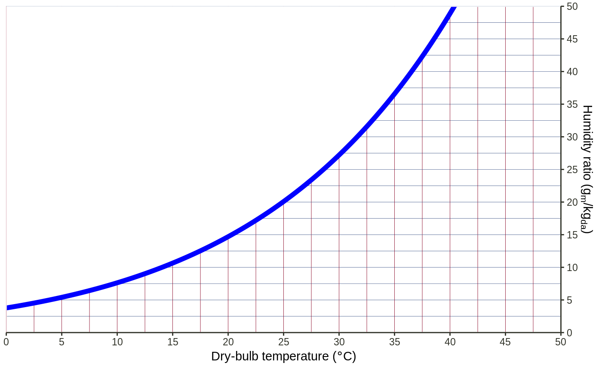

geom_line_sat() draws a saturation line based on current psychrometric
chart's dry-bulb temperature (x axis) range and humidity ratio (y axis)
range.
geom_line_sat( mapping = NULL, data = NULL, units = waiver(), pres = waiver(), n = 201, ..., na.rm = FALSE )
| mapping | Set of aesthetic mappings created by |
|---|---|
| data | The data to be displayed in this layer. There are three options: If A A |
| units | A single string indicating the units sytem to use. Should be
either |
| pres | A single number indicating the atmosphere pressure in Pa [SI] or
Psi [IP]. If |
| n | Number of points to interpolate along |
| ... | Other arguments passed on to |
| na.rm | If |
geom_line_sat() is based on ggplot2::geom_line(), so you can further
customize the line style in the same way.
Normally there is no need to add another saturation line since ggpsychro()
calls geom_line_sat() internally and makes sure that it is always rendered
at the last.
geom_line_sat() is drawing using ggplot2::geom_line() so support the
same aesthetics: alpha, color, linetype and size. It also has
aesthetics that control the calculation of the saturation line points
(required aesthetics are in bold):
# by default, a saturation line is automatically added when calling 'ggpsychro()' function ggpsychro()# you can add another saturation line ggpsychro() + geom_line_sat(units = "SI", pres = 101325, color = "blue", size = 2)